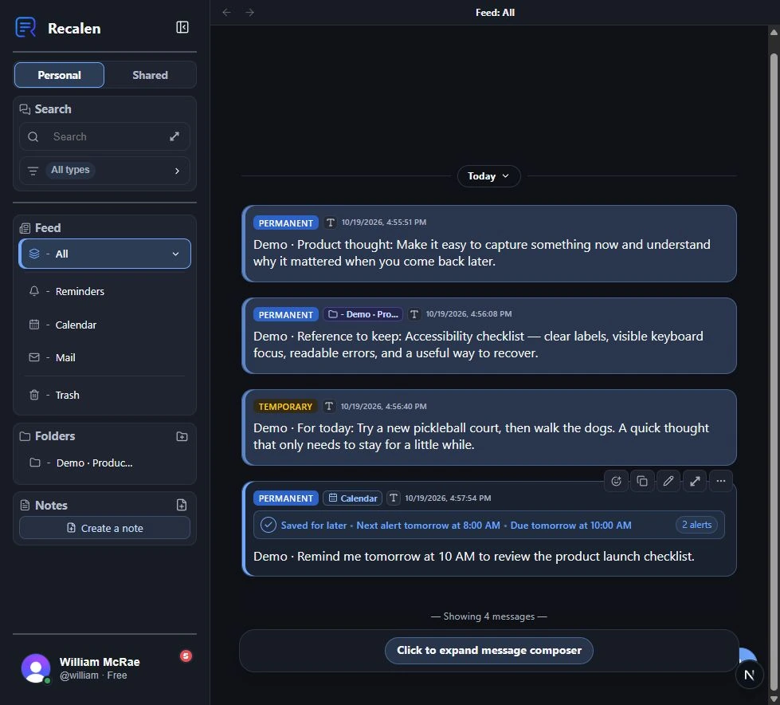
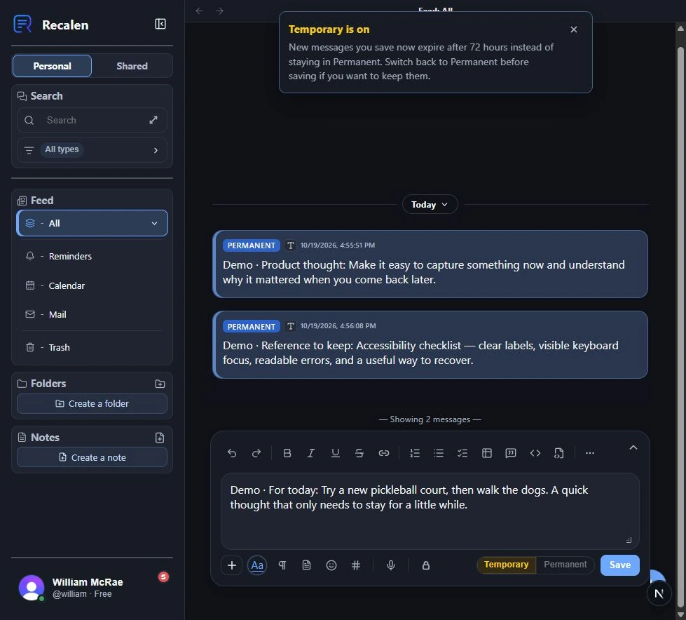
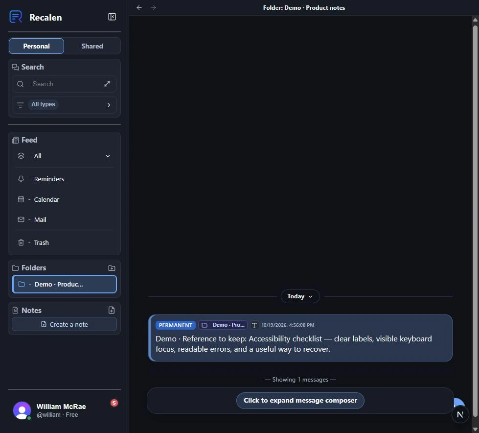
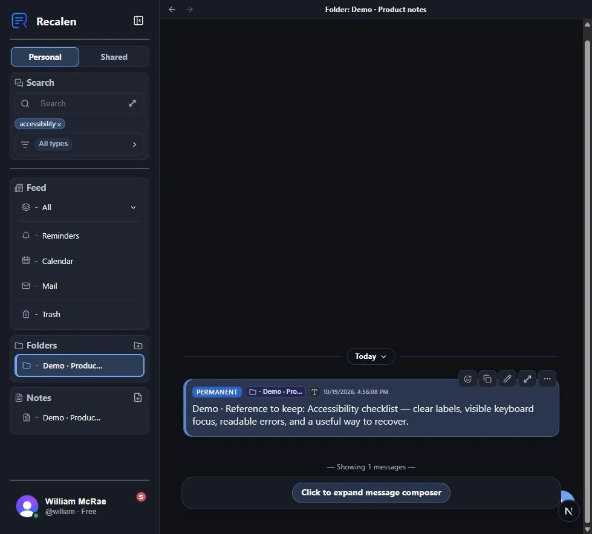
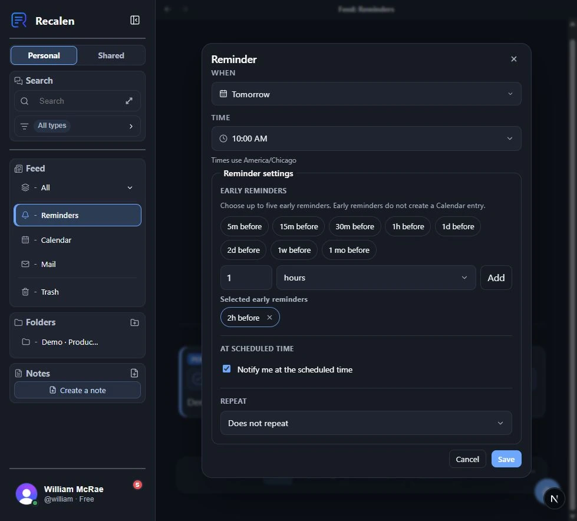
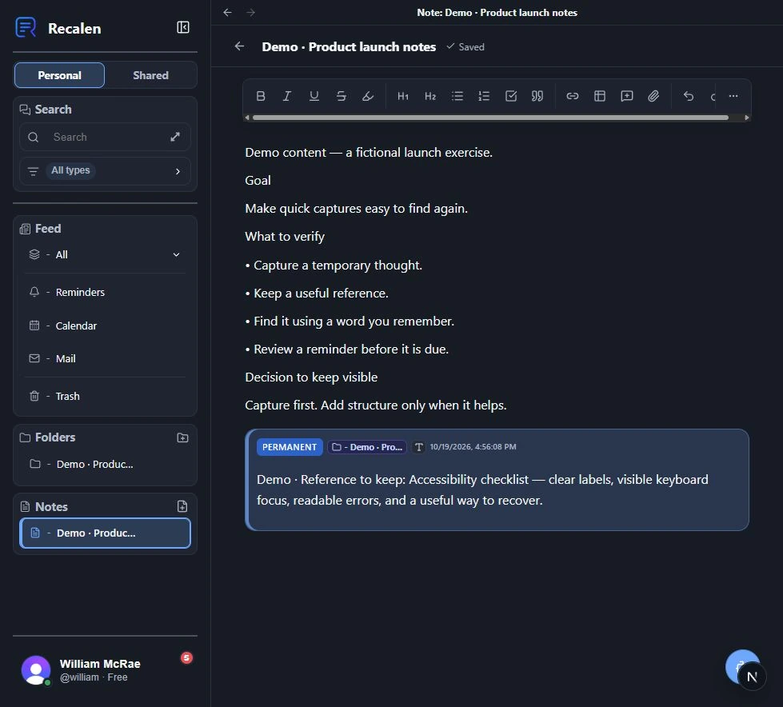

Recalen's local web beta, populated with fictional demo entries. The guided tour below follows the actual interface.
The problem
A useful place for the things you might need later.
Thoughts, links, voice notes, and useful messages arrive before there is time to file them. I wanted a place to capture them quickly, keep their context, and find them again when they became useful.
My role
One owner, across the whole product.
I owned the original idea, product direction, interface design, development, and beta delivery.
Responsibility
Product vision · Design · Engineering · Delivery
Platform scope
Web and Expo / React Native mobile
Current status
Ongoing private beta
Product decisions
The choices behind the experience.
What I chose, why it mattered, and what I accepted in return.
01
Capture first, then decide what deserves to stay.
I gave entries temporary and permanent lifecycles. Temporary entries expire after 72 hours and pass through Trash; permanent entries remain available until the person removes them.
Why I chose it. A place to put a passing thought should not require a filing decision up front or make every small capture permanent.
The tradeoff. Expiry needs to be understandable and recoverable. Trash has a 30-day grace period before automatic permanent removal.
How it is delivered
Search and normal browsing exclude expired or trashed entries. The interface keeps the lifecycle distinction visible.
02
Automated organization should respect a person's corrections.
I made generated categories, topics, entities, and related-entry suggestions assistive. Approved or manually added labels survive reprocessing; rejected labels stay rejected.
Why I chose it. If a person corrects the product, the next analysis should not undo that work.
The tradeoff. The system is conservative about suggestions and has to keep the history of user decisions.
How it is delivered
Message Intelligence separates generated metadata from user decisions. Local models run within Recalen's server processes, with a deterministic fallback when model processing is unavailable.
03
Offline capture should make a promise the app can keep.
I limited offline writes to new personal captures. The native app saves them durably and syncs them later. Cached browsing and search clearly describe their downloaded-only scope.
Why I chose it. Losing a thought, or creating duplicates after reconnecting, would undermine the reason to use a capture app.
The tradeoff. Edits and other network-dependent actions need a connection. Offline mode does not pretend to contain the entire account.
How it is delivered
Queued captures retain one identity across retries. Cached data is account-scoped, and account deletion clears the local copy.
04
Bring in selected emails without asking for the whole inbox.
I chose deliberate email forwarding to a personal Recalen address, with allowed senders, instead of mailbox synchronization.
Why I chose it. The useful information is the message someone chooses to keep. Capturing it should not require permission to scan everything else.
The tradeoff. People forward messages themselves. Recalen does not continuously discover or mirror mail.
How it is delivered
Accepted messages appear in a dedicated Mail view. When an identified user's forwarded message cannot be accepted, the app can show a safe explanation rather than silently losing it.
05
A reminder belongs to the thing the person meant to remember.
I kept plan-step reminders attached to stable steps when a plan is edited or reordered. Notes have their own document model, and references connect them to captured messages.
Why I chose it. Reorganizing a plan should not detach its reminders. A longer document should also be able to stand on its own.
The tradeoff. Notes, captured messages, and plan steps have distinct behaviors that need to stay consistent across web and mobile.
How it is delivered
Step reminders remain in-app reminder state rather than automatically creating extra calendar entries or feed messages. References point to current content instead of copied preview text.
Product film · 38 seconds
Dump now. Recall later.
A quick introduction to Recalen, from a passing thought to finding it again.
Music and sound effects; no narration. Actual local beta screens with fictional entries, framed by illustrative motion graphics. Recalen is currently in private beta.
Read the film's visual description and music credit
Good ideas rarely arrive in order.
Colored thought cards float into view: a product idea, a new pickleball court, a useful checklist, and something to revisit tomorrow. Text reads: Give them a place to land.
Get it out of your head.
A real Recalen composer contains a fictional note about trying a court and walking the dogs. A card settles above it. Text reads: A quick idea. A useful link. Something for later. Capture now. Sort later.
For today. Or for keeps.
The real Temporary and Permanent controls remain visible. Two callouts explain: Temporary thoughts last 72 hours. Permanent ones stay until you remove them.
A little structure. When it helps.
A real reference containing an accessibility checklist slides into an illustrated Product notes folder. Text reads: Put a useful thought in a folder. Build it into something bigger. One thought. A place to grow.
One word can bring it back.
The word accessibility appears in a search callout above the real beta search result. A check and the words There it is confirm the result. Text reads: Search for the part you remember.
Come back at the right time.
The real reminder dialog shows Tomorrow at 10:00 AM, with an early reminder and an at-time notification. A warm bell accompanies a reminder card. Text reads: Set a reminder. Keep an early nudge, too. A little less to remember.
Recalen
The thought cards sweep together and leave room for the Recalen logo. Text reads: Dump now. Recall later. recalen.com. Currently in private beta. The music resolves.
A guided tour captured in my local web beta, using fictional entries. It follows the core flow through capture, organization, recall, reminders, and longer Notes.
72-second guided screenshot tour of the actual local web app, with written commentary and English captions. Demo entries are fictional. Web footage does not demonstrate native offline behavior.
Read the walkthrough and explore the screens
Start with what you need to remember.
I built Recalen for the things that get scattered across messages and notes. This demo library includes quick thoughts, a useful reference, and a reminder.

Actual local beta: a personal feed populated with fictional demo entries.
Choose what should stay.
A temporary thought expires after 72 hours. A useful reference can stay Permanent until removed. That choice sits with the capture.

Actual local beta: choosing a temporary capture before saving.
Add structure when it helps.
I can put a reference in a folder after saving it. Organization is available without being a prerequisite for capture.

Actual local beta: the saved reference appears in its assigned folder.
Find the context again.
A word I remember brings back the original reference, including its text and folder context.

Actual local beta: a committed search term and its matching reference.
Return at the right time.
A reminder entered in natural language appeared with a due time and alerts. Here I can review timing, early alerts, and repeat options.

Actual local beta: reviewing the reminder generated from a fictional entry.
Build on a thought.
Longer Notes give related ideas a place to develop. A message reference can sit beside the writing and keep its preview up to date.

Actual local beta: a longer Note brings writing and captured context together.
Delivery scope
What I brought together.
Text, rich text, links, files, images, and voice capture
Temporary and permanent feeds, folders, tags, and saved searches
Search, assisted organization, and related-entry suggestions
Notes, planning, reminders, and calendar views
Selected email forwarding and account controls
Native offline capture, cached reading, and push notifications
A Next.js web app and an Expo / React Native client share domain contracts and an API client.
PostgreSQL and Prisma support account-scoped data access and the product's lifecycle rules.
Persisted processing and reminder work uses bounded retries and recovery.
Private storage, export, deletion, and per-entry text encryption are part of the implemented scope. Encryption is not account-wide and does not cover attachments.
Results and status
In use, with testing still ongoing.
Recalen has 20+ private-beta testers. Testing is ongoing, and several people use it daily.
Recalen is in ongoing private beta and has not had a public release. Some integrations depend on environment configuration. The public product URL currently provides the beta entry point.
What this work represents
The work has been about making quick capture useful later: preserving context, honoring corrections, keeping reminders attached to the right thing, and being honest about what is available offline.